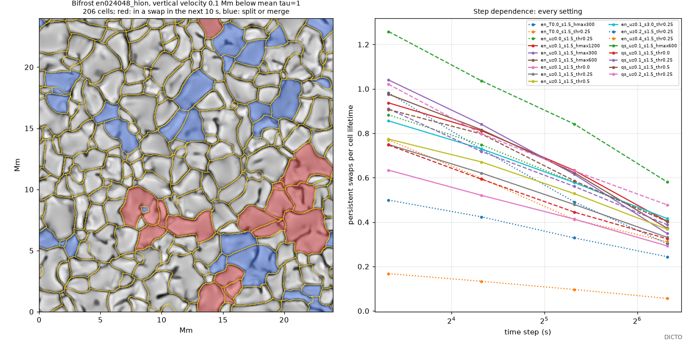

This study sets side by side things that at first glance have nothing in common: the facets of an insect's eye, the growing layer of a yew, a soap froth and the grains of a metal, the plates of the Earth's crust, the cells of cloud over a cold sea, sea ice, the boiling surface of the Sun, the ring of storms at Jupiter's south pole, the bubbles blown by stars in the gas of the galaxy, and the great empty voids between the galaxies. They share one thing. Each is a space divided into cells, and the cells change over time: they grow, shrink, drift, appear and vanish.
When cells move against one another, their neighbours change. In a generic flat tiling, while no cell is born or dies, there is only one way this can happen at a single place: two cells that touched pull apart, and the two cells beside them come into contact. This is the swap of neighbours. (In a solid three-dimensional tiling the loss and the gain come apart, and contacts change one at a time.) Followed through a layer, a cell caught in a swap has a different number of sides at top and bottom, and the solid it fills is a scutoid. Biologists call the move T1; geometers call it the 2-2 move.
Geometry says how often the swap should happen. For cells placed at random and drifting apart, the rate is a fixed number that can be worked out in advance. For a tiling that is a slice through a solid in four dimensions, the number of swaps is fixed exactly by the shape of that solid.
So the same question can be asked at every scale. Do the swaps come one at a time, and how often do they come, measured against what the geometry expects?
This is a question about common geometric laws, or common denominators, and nothing more: the swap move itself, how swaps are counted, and the rate that geometry alone would give. The study does not claim a universal law of nature linking cells, the Earth and the stars. Different physics drives each system: growth in a tissue, surface tension in a froth, mantle flow under the plates, convection in clouds and in the Sun, gravity among the voids. What they can share is only the geometry of cells that divide a space and rearrange.
The parts follow in order of size. Part I sets out the rule and the yardstick. Part II tests the method on froths, grains and model foams, where the answer is known. Parts III to V apply it to living cells measured in micrometres, to the Earth in kilometres, and to the Sun and the cosmos in megametres and megaparsecs. Each part opens by saying why its systems belong, how large they are, and what they can and cannot test. Part VI says what holds, what does not, and the five things left to do.
Before any system is measured, the yardstick: what a swap is, where it comes from, how it is counted, and what count to expect when nothing but the geometry of random cells is at work. Part I has no physical scale: its objects are polytopes and random tilings, measured in units of the cell spacing. It can fix the exact counts and the reference values; it cannot say whether any real system follows them.
Scutoids: Gómez-Gálvez et al. 2018 (Nat. Commun. 9, 2960); between concentric surfaces in foams: Mughal, Cox, Weaire, Burke and Hutzler 2018. DICTO, Scutoid Tissues in Four Dimensions, Paper #104 (Version 3, 11 November 2026; DICTO DOI 10.5281/zenodo.24111864), reads a tissue as a slice of a 4-polytope swept through space: Theorem 1 (a generic sweep of a simple 4-polytope changes by births, swaps and deaths, h₁, h₂, h₃ of them), Theorem 1′ (for a simple d-polytope, d ≥ 4, a corner changes the facets' contacts only by a birth, one contact gained, one contact lost, or a death; for d = 4 the gain and the loss come together as the swap, for d = 5 they are separate moves), Theorem 2 (the counts for the 120-cell, truncated 120-cell and bitruncated 600-cell). Moving 3D tilings are read as slices of a 5D sweep; the toy row (Part II) checks that reading by computation, not proof. DICTO, The Permutohedron Paradigm: Every Possible Order (DICTO DOI 10.5281/zenodo.24239019), Part Two, "Swaps inside cells: scutoid tissues": Chapter 6 (the swap of neighbours in a tissue is the scutoid) and Chapter 8 (the 4D permutohedron swept: 26 births, 66 swaps, 26 deaths), the neighbour-swap spine of the book.
One logger and one tiling format for 2D and 3D (studies/2026-11-15-event-logger), with Euler, triple-junction and balance checks and a negative control in every run. A swap is the 2-2 move: two cells stop touching and two others start. Three layers, fixed before counting: pairing (a lost contact a–b and a gained contact c–d make one swap if the four cells are distinct, c and d both touched a and b just before, and the two times differ by at most W); persistence (a change counts only if the new state lasts at least P; a back-and-forth within P cancels); macroscopic swaps by Rutenberg and McCurdy's own area rule (a T1 counts if all four cells exceed l² = rc√⟨A⟩). Pairing and persistence remove flicker but do not make raw swap counts step-independent: at a coarse step a swap falls into the same interval as a neighbouring cell's vanishing.
Streams that used a different setting. Earth: contacts counted per boundary on a fixed 15 km mesh, two-sided persistence of 5 Myr (its own swaps.py). Sun: persistence 60 s at 10 s steps. Clouds: two-sided persistence 10 min. 2D grains: exact events from the vertex model, persistence by area fraction. Void toy: exact event times. Compound eyes: Delaunay neighbour sets compared between depths, not the logger. Jupiter: cyclic order of the published cyclone centres per epoch. None of these has a null rate of its own; only the toy, the froth and the 3D grains are compared with a reference value.
Poisson–Voronoi throughout: moving seeds with linear motion for rates (2D T1 per cell per spacing 3.058; 3D contact changes 15.61), and swept Poisson–Voronoi for swaps per birth (24π²/35 − 2 = 4.7677 for sections of a 3D tessellation; for any normal 3D tessellation k̄/2 − 3) (studies/2026-11-15-tissue-null-models; Meijering 1953, Miles 1970, Møller 1989). For coarsening froths the reference is the literature value 0.53 ± 0.05 macroscopic T1 per T2 (Rutenberg and McCurdy, arXiv cond-mat/0502287) and 3/2 with side-shedding (Herdtle and Aref 1992). Brownian seed motion gives no rate (counts scale as 1/δ); only the net change, which saturates, is frame-rate free.
The results tables of Parts I to V share one set of columns. Under each verdict stands the source study's own wording.
Table I. The rule: exact counts and the null model.
| system · data | swaps observed | null or expectation | verdict · own wording | source (studies/) |
|---|---|---|---|---|
| Sweeps of simple 4-polytopes (theory check) 120-cell, truncated 120-cell, bitruncated 600-cell swept as tiling sequences; two generic directions | births / swaps / deaths 116 / 366 / 116; 716 / 966 / 716; 716 / 2166 / 716, exact; truncated 600-cell: no pure swap | h1 / h2 / h3 of #104 Theorems 1 and 2 (same numbers) | ESTABLISHED logger built and validated; all predictions held | 2026-11-15-event-logger (validation a); #104 |
| Null model: moving Poisson-Voronoi seeds, linear motion 2D and 3D periodic Voronoi, simulated and integrated | 2D: 3.04 ± 0.005 T1 per cell per spacing (finest step); 3D: 15.53 ± 0.07 contact changes per cell per spacing; swaps per birth in a swept 3D Poisson-Voronoi 4.7669 ± 0.0006 | integrals 3.058 ± 0.005 and 15.61 ± 0.03; exact 24π²/35 - 2 = 4.7677 | ESTABLISHED SETTLED; two methods agree (simulation converges from below, 0.7% and 0.5% short at the finest step) | 2026-11-15-tissue-null-models |
Froths, metal grains and model foams are the testing ground. A real soap froth has bubbles millimetres across and a metal has grains of micrometres, but here all of them are computer models, measured in pixels or cell spacings. In these models the swaps are read from the model itself rather than from pictures, and for the toy foams, the froth and the grains a reference value is known in advance. So the method is tested where the answer is known before it is used anywhere else. This part can test the counting rule and the reference values; it says nothing yet about living tissue, the Earth or the sky.
Table II. The laboratory: model foams, froth and grain growth in 2D and 3D.
| system · data | swaps observed | null or expectation | verdict · own wording | source (studies/) |
|---|---|---|---|---|
| Toy moving 3D foams (Voronoi, power diagrams) N = 512 cells, three generic motions, two time steps | 30,758 contact changes, 0 simultaneous at a 1e-9 time floor, 0 clumps; lattice control caught (10 simultaneous) | one contact at a time (#104 Theorem 1′ read for moving 3D tilings) | CONSISTENT a computation, not a proof: checks the generic statement on these motions | 2026-11-15-cosmic-voids (item 1) |
| 2D dry froth: Potts lattice and law-built vertex froth Potts 2048² torus (seed 2, scaling test passed); off-lattice froth from Plateau's 120 degrees, Laplace arcs and von Neumann's law with Rutenberg-McCurdy's rules (N0 = 1000, 8 seeds; laws held to 1e-9 degrees and 1e-10) | Potts: 0.48 ± 0.02 macroscopic T1 per T2 at rc = 1 pixel, 0.64 / 0.32 at rc = 0.5 / 2; law-built: 0.25 ± 0.02 at all cut-offs (0.26 / 0.25 / 0.24 at c = 0.5 / 1 / 2) | Rutenberg-McCurdy 0.53 ± 0.05, independent of rc | NOT CONFIRMED off the lattice the count is cut-off free (the Potts rc dependence was a lattice artefact) but half of 0.53; window not yet in a tested scaling state (μ₂ 1.58 against 1.24); one size so far | 2026-11-15-event-logger (scaling-state froth) |
| 2D grain growth (curved-boundary vertex model) 6 runs, 3 seeds, 1001 to 2500 vanishings per window | 1.22 to 1.27 swaps per vanished grain; macroscopic 0.06 to 0.14 | about 1.34 (Sprague et al. 2009, unverified) and 3/2 with side-shedding; macroscopic 0.53 | NOT CONFIRMED macroscopic count does NOT agree with 0.53; control partly failed (von Neumann slope 0.76, μ₂ 1.9 to 2.0 against 1.620) | 2026-11-15-grains-polycrystals |
| 3D grain growth (threshold dynamics) steady windows, two runs | mean faces 13.65 to 13.85; survivors' net contact change per vanished grain e.g. -1.49, -1.66, -2.18 | Mason et al. 2015: 13.766; identity f_v - ⟨F⟩/2: -1.43, -1.60, -2.21 | CONSISTENT control passes; the identity holds in the steady windows | 2026-11-15-grains-polycrystals |
Living tissue is where scutoids were first found, in curved sheets of cells (Gómez-Gálvez et al. 2018). A compound eye is a curved sheet of near-identical units, facets tens of µm across, traced here in X-ray volumes at 0.6 µm voxels; where the eye is curved unevenly, the geometry says the units must swap neighbours between the outer and inner surfaces. It is the one place in this study where a scutoid prediction was stated before the data were seen. The yew's cambium is the growing sheet of wood cells under the bark, cells tens of µm wide. Spectacle and lens hole arrays, with holes around a millimetre, are the made counterpart: columns of holes between two curved surfaces, showing how much curvature a regular array needs before it swaps. This part can test the geometric law of where swaps must begin; it cannot yet show a swap observed in a real eye.
Table III. Microcosm: compound eyes, yew cambium, spectacle hole arrays.
| system · data | swaps observed | null or expectation | verdict · own wording | source (studies/) |
|---|---|---|---|---|
| Compound eyes: geometric law perfect hexagonal mosaic; four open micro-CT mosaics (ODA-3D) | one edge family flips when anisotropy A reaches √3 across the rows (1024 of 3039 edges at A = 1.74, none at 1.72), never along rows; real mosaics: swaps start well below √3 (0.2% for A < 1.2 to 33% at 2.5 to 3) | prediction stated before data (commit 2bf1098a): swaps in oval eyes, about none in near-spherical ones | ESTABLISHED law proved for the perfect mosaic and calibrated on four real mosaics; no scutoid observed | 2026-11-16-compound-eye-scutoids |
| Compound eyes: depth traces (butterfly gw05, gw16) Paukner et al. 2024 X-ray volumes, 0.6 µm voxels | gw05 cone layer 10 of about 1330 pairs change against 4.2 ± 2.1; gw16 retina 799 of 4786 against null 809 ± 34; 0 of 1505 flagged changes a true exchange | about 1% scattered changes for these nearly evenly curved eyes, below the method's resolution | NOT A TEST NOT A TEST OF THE PREDICTION (relabelled 16 Nov with DICTO); kept as method development | 2026-11-16-compound-eye-scutoids (gw05, survey, gw16) |
| Yew and conifer cambium CoLuS conifer patches (one cross-section) | swaps not observable in one section; file starts plus ends 0.021 per file per cell (manual outlines) | - | PARKED PARKED (DICTO 16 Nov: 'forget the yew sample unless available online') | 2026-11-15-yew-cambium |
| Spectacle hole arrays (model) hole columns between lens surfaces of 0 to 10 D base curve | uneven stretch at most 1.15 : 1; 0 swaps for regular layouts; 1 to 4 in about 175 edges for spiral and random holes | √3 = 1.73 : 1 needed before a hexagonal lattice swaps | ESTABLISHED one negative: no scutoids in spectacle lenses (computed, 7 controls passed) | 2026-11-15-scutoid-lenses |
The Earth's surface is divided into cells at very different scales: tectonic plates thousands of km across that rearrange over hundreds of millions of years; open cells of cloud tens of km across that change within hours; and sea ice floes, from metres to kilometres. Here no answer is known in advance and there is no null rate, so the test is whether a count is stable: unchanged under a finer time step, and the same in independent records. The plates can test agreement between independent reconstructions of the past; the clouds and the ice test whether satellite pictures yield a stable rate at all. Neither can compare a rate with a reference value.
Table IV. The Earth: tectonic plates, cloud cells, sea ice.
| system · data | swaps observed | null or expectation | verdict · own wording | source (studies/) |
|---|---|---|---|---|
| Earth: plate reconstructions, 230 Ma to now Müller 2016, Müller 2019 (three readings), Matthews 2016, Merdith 2021; independent history Scotese & Wright 2018 | persistent swaps 23 to 35 (10 to 15 per 100 Myr), step-independent at 1 to 5 Myr; per plate per 100 Myr 0.44 to 0.58 (Müller family) against 0.07 (Scotese & Wright) | no null rate; test: agreement across independent histories, clustering at reorganisations | NOT CONFIRMED agreement does NOT carry over to an independent history; no clustering beyond chance (p 0.12 to 0.28); counts describe the models, not the Earth | 2026-11-15-earth-plates (rounds 1 and 2) |
| Atmosphere: open-cell convection (satellite) Himawari-9, 5 Feb 2025, 6 h, 2.5 min frames | 0.03 to 0.15 persistent swaps per cell-hour; within about 30% over 2.5 to 10 min steps, threefold over settings | no null rate | NOT CONFIRMED FEASIBLE; rates NOT yet stable; no rate goes into the comparison table | 2026-11-15-atmosphere-seaice |
| Sea ice floes; ice-wedge polygons Himawari-9 Okhotsk pilot; literature | 0 to 33 usable cells; no event time series for polygons | - | NOT A TEST NOT feasible from the geostationary images; no usable time series | 2026-11-15-atmosphere-seaice |
Beyond the Earth the cells grow vast. The Sun's surface is tiled by granules, convection cells about 1 Mm (1000 km) across that live for minutes, simulated here in a box 24 Mm wide: the only natural 2D tiling in this study with thousands of swaps. Jupiter's south pole holds a ring of five cyclones, each thousands of km across, watched by Juno for years. Interstellar bubbles, blown into the gas of the galaxy by stars, are tens of parsecs across. Cosmic voids, the empty basins of the galaxies' web, span Mpc; here they are basins smoothed at 3 to 6 Mpc/h in a simulated box of 256 Mpc/h. This part asks whether the same geometric rule can be read at astronomical sizes: whether contacts change one at a time and whether a rate is stable. Few of these systems can give a rate: the ring has too few cells, the bubbles have no time series, and the voids are built of voxels, which are not a generic tiling.
Table V. Macrocosm: the Sun, Jupiter, interstellar bubbles, cosmic voids.
| system · data | swaps observed | null or expectation | verdict · own wording | source (studies/) |
|---|---|---|---|---|
| Sun: granulation (radiative-MHD simulation) Bifrost runs en024048_hion and qs024048_by3363, 13 settings, steps 10 to 80 s; en024048_hion traced through 7 depth planes (0 to 0.4 Mm below the surface) | 0.07 to 0.15 persistent swaps per cell per minute at 10 s; 0.6 to 1.3 per cell lifetime; 0.8 to 1.9 per persistent split (spread over settings); corrected by the control's detection fraction and fitted to step 0: 0.08 to 0.16 (median 0.13) at P = 60 s, ±9 to 15% per setting plus about 15% calibration, but the corrected rate still halves from step 0 to 80 s and moves by up to 30% with P; counting only swaps seen again on the neighbouring depth planes (walls standing upright: 78 to 83% of contacts in the top 0.2 Mm) leaves 0.026 per cell per minute at 0.1 Mm and 10 s, yet real frames give only 1.2 to 1.7 times as many as shuffled frames, and the rate still falls 54 to 63% from 10 to 80 s | no null rate (births at junctions almost absent, so swaps per birth is undefined) | NOT CONFIRMED NOT CONFIRMED: corrected rate still step-dependent and P-dependent; the step-0 value is an extrapolation, not a stable rate; the depth rule fails the shuffled-frame control (needed 3x) and does not flatten the step; order of magnitude stable; DICTO's reframing (16 Nov) measures the skeleton without swap matching (next row) | 2026-11-15-sun-granulation |
| Sun: the skeleton of granulation, persistence or reappearance (radiative-MHD simulation) Bifrost en024048_hion, vertical velocity at 0, 0.1 and 0.2 Mm below the surface (40 min, 10 s), and qs024048_by3363 at 0.1 Mm; no swap matching: corners, downflow sinks and lanes followed by position within 96 to 192 km | half-lives at 0.1 Mm: corners 220 s, corner sites 280 s, lanes at a fixed point 190 s, cells 540 s; corner sites lasting 5 min or more: 32% continuous with the same cells, 33% continuous with renewed cells (0.64 new cells per minute), 35% with brief gaps (median 20 s, 2% of the span); a vanished corner is back at the same place within 60 s 5.6 times as often as at a far time; families of fragmenting granules: 51% still present after 20 min; no local cycle, only an oscillation of the whole box with a period of 400 to 480 s | prediction written before the run: corners outlive cells; shuffled frames give one-frame lifetimes and chance re-formation (both seen); moving Voronoi: exact corner half-life 970 s, re-formed sites 1 to 7% | NOT CONFIRMED NOT CONFIRMED: corners do not outlive the cells (220 s against 540 s); CONSISTENT: re-formation at the same place (x5.6 at 10 s, falls to x1.8 at 80 s), renewal of the cells at a persistent corner, families outlive single granules; NOT CONFIRMED: the three-class split (gaps not separable from detection dropouts) and any cycle of local recurrence | 2026-11-15-sun-granulation (section: the skeleton) |
| Jupiter: south polar cyclone ring (Juno) cyclone centres PJ4 to PJ30 (Mura et al. 2021 via Gavriel & Kaspi 2022) | 0 swaps: cyclic order 1-2-3-4-5 in all 19 of 22 epochs where all five were seen; one sixth cyclone formed in Sep 2019 and was gone by Feb 2020 (an insertion, not a 2-2 move) | no rate possible (6 cells, one event in 9 years) | NOT A TEST event catalogue, never a rate; scope SETTLED | 2026-11-16-planet-cells |
| Interstellar bubbles (toy, rung 5 of the foam ladder) 2D toy slice; public ISM data single-epoch or about 10 Myr apart | Euler fails in 223 of 240 frames; swaps 0.01 per vanished cell (flicker) | - | NOT A TEST toy rule FAILS as a tiling; real data give no usable time series | 2026-11-15-interstellar-bubbles |
| Cosmic void basins (N-body simulation) pmwd, 256³ particles in 256 Mpc/h, watershed basins R = 3 to 6 Mpc/h, two seeds, down to Δa = 1/512 | share of contact changes that come alone 0.60 at the finest spacing (about 0.65 to 0.7 extrapolated); about 25 contact changes per merged basin (23 to 27) | all single (Theorem 1′) for generic tilings; voxel tilings are not generic | NOT A TEST cannot test Theorem 1′ in its exact form; residual clumping DECIDED to be the discreteness of the units (falls with finer voxels and tracers), zero in the continuum an extrapolation | 2026-11-15-cosmic-voids |

The question throughout has been whether these systems share common geometric laws or denominators (the swap move, its counting, its expected rate from geometry), not whether one universal law of nature governs cells, the Earth and the stars.
Established: the geometry. In a generic sweep of a simple 4-polytope the slice is a tissue whose cells are born, swap neighbours (the scutoid move) and die, counted exactly by the h-vector; in higher dimensions contacts are gained and lost one at a time (#104, Theorems 1, 1′ and 2). The shared event logger recovers these counts exactly, and the reference values for moving Voronoi tilings are fixed exactly or by two methods that agree (2D T1 rate 3.04 ± 0.005 against the integral 3.058 ± 0.005; 3D 15.53 ± 0.07 against 15.61 ± 0.03). Consistent, at the strength of computation: generic moving toy foams change one contact at a time (30,758 events, none simultaneous); 3D grain growth obeys the contact identity. Not confirmed: the froth's macroscopic T1 per T2. A froth built only from Plateau's and von Neumann's laws, with Rutenberg and McCurdy's own rules, gives 0.25 ± 0.02 at every cut-off, half of their 0.53 ± 0.05 (the Potts lattice's 0.48 held only at its natural cut-off); its window is not yet in a tested scaling state. Not established: no natural tiling yet has a swap rate that is stable and comparable across scales (granules and cloud cells depend on the time step or the settings; the plate agreement within one model family does not carry over to an independent history), and no scutoid has been observed in a real compound eye (the butterfly traces are not a test of the prediction). The cross-scale comparison of the plan "One tissue, three scales" therefore cannot yet be made. The five open items below lead to it.
Verdicts over all 18 rows: ESTABLISHED 4, CONSISTENT 2, NOT CONFIRMED 6, NOT A TEST 5, PARKED 1. By part, from small to vast (numbers and sources in Tables I to V):
| part | system | verdict |
|---|---|---|
| I | Sweeps of simple 4-polytopes (theory check) | ESTABLISHED |
| I | Null model: moving Poisson-Voronoi seeds, linear motion | ESTABLISHED |
| II | Toy moving 3D foams (Voronoi, power diagrams) | CONSISTENT |
| II | 2D dry froth: Potts lattice and law-built vertex froth | NOT CONFIRMED |
| II | 2D grain growth (curved-boundary vertex model) | NOT CONFIRMED |
| II | 3D grain growth (threshold dynamics) | CONSISTENT |
| III | Compound eyes: geometric law | ESTABLISHED |
| III | Compound eyes: depth traces (butterfly gw05, gw16) | NOT A TEST |
| III | Yew and conifer cambium | PARKED |
| III | Spectacle hole arrays (model) | ESTABLISHED |
| IV | Earth: plate reconstructions, 230 Ma to now | NOT CONFIRMED |
| IV | Atmosphere: open-cell convection (satellite) | NOT CONFIRMED |
| IV | Sea ice floes; ice-wedge polygons | NOT A TEST |
| V | Sun: granulation (radiative-MHD simulation) | NOT CONFIRMED |
| V | Sun: the skeleton of granulation, persistence or reappearance (radiative-MHD simulation) | NOT CONFIRMED |
| V | Jupiter: south polar cyclone ring (Juno) | NOT A TEST |
| V | Interstellar bubbles (toy, rung 5 of the foam ladder) | NOT A TEST |
| V | Cosmic void basins (N-body simulation) | NOT A TEST |
Every lead of every source study. Where nothing else applies, the reason is DICTO's narrowing of 16 November 2026.
| source study | lead | closed: done, or dropped and why |
|---|---|---|
| event-logger | NEXT 1: explain the single-contact clumps | done (earth-plates round 1: swaps where one pair shares a second boundary) |
| event-logger | NEXT 2: persistence rule for swaps | done (pairing.py; earth-plates two-sided k = 5 Myr) |
| event-logger | NEXT 3: close the Müller 2019 seam, second model | done (earth-plates: rules A, B, C; four models) |
| event-logger | macroscopic count against 0.53 | done (scaling-state froth row); the rc question moves to open item 4 |
| tissue-null-models | power diagrams with non-linear weights | dropped: DICTO's narrowing (linear-motion values suffice for the table) |
| tissue-null-models | curved-film vertex model of coarsening | moved to open item 4 |
| earth-plates | round 1 NEXT 1 and 2: independent model, reorganisations | done (round 2: NOT CONFIRMED) |
| earth-plates | round 1 NEXT 3 and round 2: Sun and void tissues with the same rules | done (sun-granulation, cosmic-voids) |
| earth-plates | round 2: per-plate rates and resolution control | open item 5 |
| sun-granulation | lead 1: unpaired lost and gained contacts | open item 3 |
| sun-granulation | lead 2: rate against step, extrapolated to step 0 | done 16 Nov (step-0 fit: NOT CONFIRMED); the follow-up stays in open item 3 |
| sun-granulation | lead 3: emergent intensity instead of velocity planes | dropped: DICTO's narrowing (a second observable of the same simulation) |
| sun-granulation | lead 4: Hinode SOT/BFI G-band real series | dropped: DICTO's narrowing (needs calibration before any swap; reopen after open item 3) |
| sun-granulation | lead 5 and planet-cells lead 4: supergranules (HMI) | dropped: DICTO's narrowing (box too small or account needed) |
| sun-granulation | lead 6: ratio to #104 swaps per birth | closed: births at junctions are almost absent, so the ratio is undefined for granulation |
| cosmic-voids | third voxel size (768³) | dropped: cause already decided (discreteness); a third size refines an extrapolation only |
| cosmic-voids | comparison-table numbers | done (this table) |
| interstellar-bubbles | NEXT 1: pairing rule | done (event-logger pairing section) |
| interstellar-bubbles | NEXT 2: rung 1 at 1024² | done (scaling-state froth at 2048²); rung 3 at 96³ dropped: DICTO's narrowing |
| interstellar-bubbles | NEXT 3: rung 5 new cell rule; TIGRESS at 1 Myr | dropped: toy fails as a tiling and real data have no time series |
| atmosphere-seaice | NEXT 1 to 3: pure cell scenes, two-sided splits, image control | dropped: DICTO's narrowing (rates threefold setting-dependent; the Sun carries the natural 2D rate, open item 3) |
| atmosphere-seaice | NEXT 4: sea ice (SubZero, MODIS), ice-wedge polygons | dropped: not feasible or no time series |
| grains-polycrystals | Next 1: Ni correspondences from the authors' face table | dropped: DICTO's narrowing (grain matching too noisy; open item 2 tests a law without matching) |
| grains-polycrystals | Next 2: more accurate 2D scheme | dropped: DICTO's narrowing (froth benchmark, open item 4, covers the 2D count) |
| grains-polycrystals | Next 3: serial-section test of ⟨F⟩/2 - 3 | open item 2 |
| grains-polycrystals | Next 4: OCP movie count by hand | dropped: tens of grains, low resolution |
| compound-eye-scutoids | next 1: butterfly volume trace | done (gw05, gw16: NOT A TEST) |
| compound-eye-scutoids | next 2: D. elpenor negative control | folded into open item 1 (a control for the first positive test) |
| compound-eye-scutoids | next 3: wasp eye (29 ommatidia) | folded into open item 1 |
| compound-eye-scutoids | next 4: orient the bee scan | dropped: names model regions only, no new swap data |
| compound-eye-scutoids | set-aside (DICTO): find unevenly curved eye data | open item 1 |
| planet-cells | lead 1: Jupiter south ring through the logger | closed: the light check already gives 0 swaps; the logger would only classify the 2019 insertion, which is not a swap |
| planet-cells | lead 2: JIRAM PJ31 to PJ77 and north insertions | dropped: DICTO's narrowing (insertions, no rate) |
| planet-cells | lead 3: Pluto side-number statistics | dropped: static, no swaps |
| yew-cambium | multi-ring or serial tangential sections | PARKED by DICTO until an online serial-section data set turns up |
| scutoid-lenses | next 1: camera hole-array or lenslet cap | dropped: DICTO's narrowing (optics, no bearing on swaps) |
| scutoid-lenses | next 2: compound-eye scutoids | done (became the compound-eye study) |
| scutoid-lenses | next 3: exact exactly-one optimum | dropped: DICTO's narrowing (covering geometry, no bearing on swaps) |
Data and results of others, by row. Froth: cellular Potts model of Glazier, Gross and Stavans 1987; Stavans and Glazier 1989. Grains: Mason et al. 2015 (front tracking); Sprague, Patterson and Grandhi 2009; Wakai et al. 2001. Earth: plate models of Müller et al. 2016 and 2019, Matthews et al. 2016, Merdith et al. 2021, Scotese and Wright 2018 (PALEOMAP), Domeier and Torsvik 2014, read with pyGPlates (Müller et al. 2018) and GPlately (Mather et al. 2024); boundary formulas of Bird 2003. Sun: Bifrost (Gudiksen et al. 2011), runs of Carlsson, Hansteen, Gudiksen, Leenaarts and De Pontieu 2016 (Hinode Science Data Centre Europe); segmentation with scikit-image (van der Walt et al.). Clouds: Himawari-9 imagery observed by the Japan Meteorological Agency, mirrored by NOAA. Voids: pmwd (Li, Lanusse, Modi et al. 2022); basin tracking after Wojtak, Powell and Abel 2016; Meijering 1953. Eyes: ODA-3D tables of Currea, Sondhi, Kawahara and Theobald 2023 (CC BY 4.0; bee stack from Taylor et al.); X-ray volumes of Paukner et al. 2024 (BossDB, no licence stated: no images of them are reproduced here); Makarova et al. 2025; Kim et al. 2016. Jupiter: Mura et al. 2021, cyclone centres as supplied by Gavriel and Kaspi 2022 (Zenodo 6611745, CC BY 4.0); Adriani et al. 2020. Cambium: CoLuS (Katzenmaier and co-workers, Zenodo, CC BY 4.0). Froth reference values: Rutenberg and McCurdy; Herdtle and Aref 1992; Hinde and Miles 1980.
DICTO: ideas, names, constructions and direction, including the scutoid tissue, the swap theorem and the compound-eye prediction. Computation, proofs, verification and drafting with Claude (Anthropic).